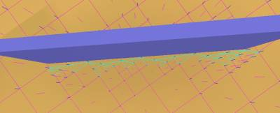
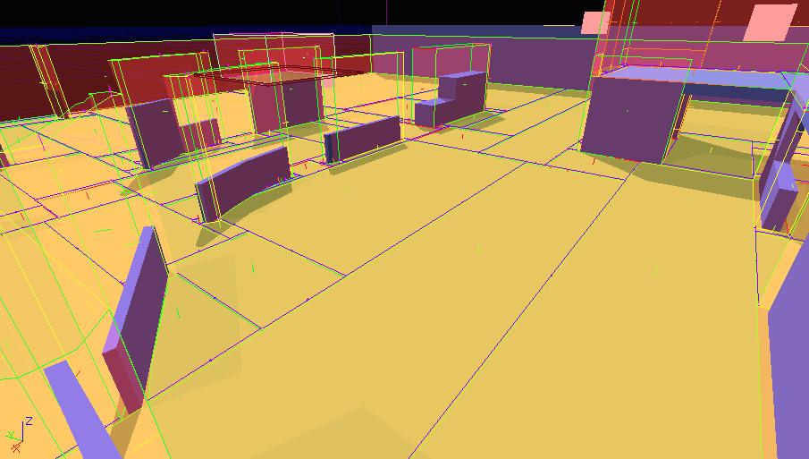
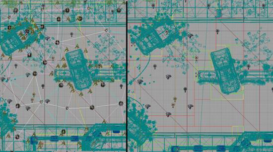
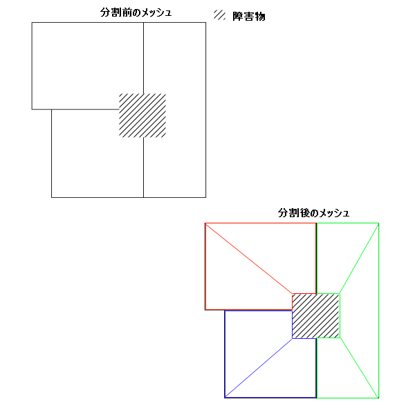

UDN
Search public documentation:
NavigationMeshReferenceJP
English Translation
中国翻译
한국어
Interested in the Unreal Engine?
Visit the Unreal Technology site.
Looking for jobs and company info?
Check out the Epic games site.
Questions about support via UDN?
Contact the UDN Staff
中国翻译
한국어
Interested in the Unreal Engine?
Visit the Unreal Technology site.
Looking for jobs and company info?
Check out the Epic games site.
Questions about support via UDN?
Contact the UDN Staff
ナビゲーション メッシュ参照
ドキュメント概要: ナビゲーション メッシュ システムの高度な参照とその使用方法。 ドキュメントの変更ログ: Matt Tonks により作成。アプローチの概観
ナビゲーション メッシュ
ワールドを繋がれた一連の点として表すのではなく、凸面ポリゴンの繋がれたグラフを介する AI の配置空間のより正確な表現を試みます。各ノード (ポリゴン) で、その凸面性によるため、そのノード内のどの点からも、同ノード内の他の点に AI が到達することができることは分かっています。従って、グラフを通したパスファインディングのタスクは、ノードの繋がったグラフに沿ったパスファインディングに単純化されます。これは、現在 Unreal が採用しているウェイポイント グラフ上でのパス検索の実行方法と似ています。2 つのシステム間の差は、古いメソッドでは、パスが一度生成されると、パスに沿った点以外の他のデータがないということです。 ナビゲーション メッシュでは、目的地に到達するのに歩く必要のある一連のポリゴンを表すパスがありますが、同時に道に沿って歩くことのできる空間がどのように見えるかが正確に分かります。ウェイポイント グラフで生成されたパスに沿って、各点を通っていく代わりに、AI は、ナビゲーション メッシュのノード間のインターフェースに関連付けられたすべての情報を持つようになりました。これは、精度が高く、事実上自由に角を曲がることを可能にし、全般的により自然な動きを達成します。 図 A は、この例を表しています。 (図 A)
10 個のノードのパスでさえ、ウェイポイント グラフのパス コントロールの挙動は、4 個のノードのナビゲーション メッシュ パスのそれよりも劣ることに注意してください。
(図 A)
10 個のノードのパスでさえ、ウェイポイント グラフのパス コントロールの挙動は、4 個のノードのナビゲーション メッシュ パスのそれよりも劣ることに注意してください。
障害メッシュ
メッシュ自身に加えて、ワールド内で障害を表現するメッシュも作成します。これは、移動メッシュのエッジに沿って、最終的に「壁」となります。このメッシュの目的は、AI が 1 点から他の点に直接歩けるかどうかを知る必要がある場合に、厳密性の低いレイキャスト (この障害メッシュに対してのみ) を可能にすることです。これは、開始地点と目的地の間に多くのポリゴンがあったとしても、広い開かれたエリアにおけるパス検索をスキップすることを可能にします。両方のグラフのポリゴンを含むオクトリーが生成されます。これらのグラフは、開始ポリゴンのクイック検索 (現在どのポリゴンにいるか) と目的ポリゴンの検索 (目的のポリゴンはどれか) に使用されます。生成のプロセス
多くのナビゲーション メッシュ実装が苦しむもっとも大きな欠点の 1 つは、メッシュの作成がアーティストに任されて、かなりの労力を要する (パスノードを配置するよりも大変な労力です) ということです。これを考慮に入れて、デザイナーが単調で辛い仕事をせずに、自動的にメッシュを生成できるシステムを作ることにしました。ときには、ナビゲーションメッシュの一部を手動で作成した方が都合がよい場合があります。この手順は ナビゲーションメッシュの手動作成 で説明しています。 このプロセスは 4 段階で完了します。1. 探索
デザイナーによって配置された各ポジションから始まり、マップはメッシュでいっぱいになっています。いくつかのステップ サイズに従って、マップの各セグメントがレイキャストを介してテストされ、検証されるとメッシュに追加されるということです。この段階の最後には、グリッドに似たような密度の高いメッシュができあがります。Unreal のラインチェックの AABB 性質のため、四角形での作業をします。 (図 C は、メッシュ生成の第 1 段階後のメッシュを表しています。)
2. 境界の埋め戻し
ご想像の通り、再分割されても軸サーフェスに沿って、探索プロセスの四角い性質のため階段のパターンが現れます。このステップは、よりスムーズなサーフェスを生成するために、可能な場合これらの角を埋めようとします。 (図 E は、埋め戻しされたテスト マップのセクションを表しています。埋め戻された角は緑色になっています。)
3. メッシュ単純化
もっとも太い (そして大半の場合、時間を消費するステップ) は、メモリに合うように、そしてパスファインディングを実行するのにより適度にメッシュを単純化するものです。現在、単純化は主に、近接したノードのマージを介して達成されます。明らかに、見境なく近接したノードを単純にマージすることはできません。というのは、希望しないアスペクト比の長細い破片になってしまい、一般的に言うと滅茶苦茶になってしまうからです。従って、最初のステップは、四角形マージと呼ばれるものになります。ここでは、まず最終的にもっとも大きなポリゴンになるメッシュ内の四角形を拡張します。結果として、大きなポリゴンがメッシュのほとんどをカバーし、インターフェースに沿って破片を積み重ねるようになります。5. メッシュ単純化
メッシュが単純化されたので、最後のステップはノード間のパス可能なエッジを作り、障害メッシュを生成することです。また、このステップの間、未使用の頂点をカリングし、データを直列化するのにほぐします。 (図 I は、すべてのステップが完了した後のメッシュを表しています。障害メッシュを描く頂点サーフェスに注目してください。)
パスノードに対するナビゲーション メッシュの利点:
ノード密度の減少
メッシュでは、広いエリアを 1 つのポリゴンで表現することができるので、全体のグラフ密度が下がります。これは以下の多くの理由から利点となります:- 格納されるノードの減少に伴って、メモリ フットプリントが減少します。
- 検索されるグラフの密度が縮小されるので、パスファインディングの時間が下がります。
- より少ないノードは、レベルを越えたパス コントロール情報を修正する時間が少なくなるということです。

より最適なデータ ストラクチャ
現在のパス データは、レベル内の UReachSpecs と ANavigationPoints を介して格納されます。これは、親クラス (特に AActor) からのオーバーヘッドとデータが分配されていることが原因で、両方のメモリ フットプリントの肥大化に結果します。メッシュでは、データは 1 つの大きなバッファに格納されます。これは、圧縮やその他の最適化がより簡単にできます。データを最適化するような努力は特にされていませんが、MP_Gridlock でパスノードに対して既に 20% の利益が見られます。FindAnchor の疎遠化
現在、パス検索を開始する場合はいつでも、AI はまず、どこからパス コントロールを始めるかを決定する必要があります。これは、範囲内のパスノードを返すオクトリー チェックをし、その後もっとも近く、到達可能なパス ノードを探すために、AI からパスノードにレイキャストを行うことで達成されます。目的地がグラフにない場合は、パス目的地に関しても同様のことが行われなければいけません。これのいくらかは、キャッシュなどによって軽減されることが可能 (また実際軽減されます) ですが、ランタイム時に定期的に AI をパス コントロールすることにより、多大なレイキャストが行われなければいけない事実は残ります。ナビゲーション メッシュを使用して、FindAnchor が解決するあいまいさは存在しなくなります。AI が現在いるポリゴンを単純に見つけ、それが開始場所となります。目的地に関しても同じことが言えます。より良いパス コントロール挙動
先に (図 A で) 実演された例では、ウェイポイント グラフからの移動が不自然に見える状況がいくつかあります。AI にもっとも近いパスノードはすぐ後ろ、または進行方向と反対にある可能性があります。目的地に関しても同じ問題があります。レイキャストは必要ない
ナビゲーション メッシュに生成したデータを使用して、AI の行うレイキャストの大部分を削除することが可能です。1 つの例として、AI が最初に移動しようとするとき、AI が目的地に直接行けるかどうかを決定するために最初のレイキャストが実行され、ネットワークでのパスファインディングを避けます。これは、2 つの理由からもはや必要ありません。1 つ目は、たいてい、点が直接到達できる場所にある場合、AI と同様のポリゴン内にあるので、単に開始点と目的地のポリゴンを見つけ、それが同じであるということを検知すれば良いだけだからです。2 つ目は、障害メッシュにフォールバックし、直接到達可能かどうかの決定をするために、厳密性の低いラインチェックを行えば良いからです。どちらのオプションもレイキャストよりもずっとコストがかかりません。Gears のコードベースでは、AI が点に直接行けるかどうかを尋ねるようなその他いくつかの場合がありますが、これらすべてでレイキャストはもはや必要ありません。 最適化のもう 1 つの手段は、(PHYS_Walking を介して走らせるのでなく) メッシュ上で AI を動かすことです。メッシュは、AI が歩くことのできる配置空間の描写なので、メッシュに投影し、PHYS_Walking のようにフレームごとに N レイキャストをするのではなく、AI を可視性のジオメトリに 1 つのレイキャストで修正することは大したことではありません。これは、特にクラウドで便利です。通常の AI が必要とするような厳密性は必要としないので、ワールド ジオメトリに対して衝突チェックを行うのではなく、ナビゲーション メッシュにスナップすることで、潜在的により多くのクラウドを一度に処理することができます。もちろん、一般的に画面上の AI の数を増加させることができるはずです。ワールドのより良い描写
歩くことのできる空間の継続的描写は AI がするであろう多くの他のタイプの空間クエリーにとって利点があります。以下はその例です。- 部隊のフォーメーションに残るような位置を決定するプロセスは、大幅に改善されました。これは、希望とされるフォーメーション位置がメッシュ内にあり、歩くことが可能かどうかを実際にチェックするからです。以前の方法は、フォーメーション位置にもっとも近いパスノードを見つけることに依存していました。これは、検索にコストがかかります。さらに、位置にもっとも近いパスノードは、必ずしもフォーメーション位置に近いわけではないので、見た目が悪くなっていました。
- AI は、マントルすることのできる場所を表現する個別のパスノードに行くのではなく、壁に沿ってどの点でもマントルすることができます。
- 正確な影響度マップとしてのメッシュの簡単な適応です。ハンド オーサリングされたウェイポイント グラフに渡ってプロパゲートすることは、ワールド空間のカバーが未完成なため、わずかしか正確でなく、人間によって配置されるノードに依存しています。これに対して、メッシュは正確で完成しています。
自動生成
生成プロセスが自動なので、デザイナーがパスでレベルを作成 (そして維持) する負担が軽減されます。明白な利点は、デザイナーが最初の場所にノードを配置する必要ないものの、自動生成プロセスが常に正しく動作するので、パスが間違っている (パス ネットワークを変更せずにジオメトリが変更されるなど) 可能性が減少します。例えば、Gears の製作中に、完全にスクリプトされたレベルがビジュアル パスにハンドオフされ、これが結果的にレベルのパスデータの大部分を破損させてしまうといういくつかの事例がありました。自動的にパスをビルドする機能は、この状況から抜け出す簡単な方法を可能にします。さまざまなサイズのエージェントの固有の柔軟性
ワールドのより正確な描写のもう 1 つの利点は、さまざまな幅のエンティティへの特別な考慮がもはや必要ないということです。使用されている歩く生物のすべてのタイプに、手動で幅のクラスを追加するのではなく、メッシュが提供することのできる余分なデータを利用するのです。ポリゴンの間のエッジの幅は既に計算済みであり、ランタイム時に幅の広いエンティティの到達可能性に関する正確な情報を取得するために、厳密性の低い障害メッシュに対する 'extent' ラインチェックでフォールバックをすることも可能です。動的オブジェクトの実際の処理の可能性
邪魔になるような動的オブジェクトのウェイポイント グラフ処理に制限された場合、困難であり、時に不可能です。例えば、reachspec に木箱を投げたとすると、データはその障害を回避する方法に関する情報を出しません。もちろん、避けるために、レイキャストを行い、動的アンカーの追加を試みることが可能ですが、これは、レイキャストを必要とする上、多くの状況で動作しません。ナビゲーション メッシュを使用すると、障害を避けるのに必要なことは、レイキャストの必要なく、すべてメッシュ内で行われます。単に障害の境界ボックスを取り、境界の周りでポリゴンを分割します。これで、ラインチェックの必要なしで障害を避ける方法を説明するような、完全にパス可能なメッシュができました。新しく分割されたポリゴンは、そのポリゴンのサブ階層として役割を果たします。メッシュ全体を調節するのでなく、AI が入ると、障害を避けてナビゲートするためにサブメッシュ上でパスファインドをするような、影響されるポリゴン内でメッシュをビルドします。この例は、図 J を参照してください。